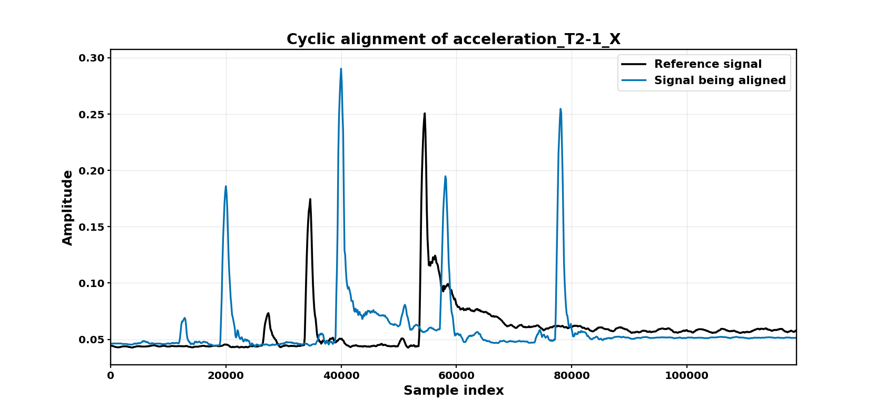

CSAOOD documentation
CSAOOD aligns univariate, multivariate, and multimodal cyclic waveform records, constructs registered distance matrices, and clusters the resulting observations without using event labels or event-region tags.

User guide
Key design guarantees
Positive offsets always mean a right shift, following
numpy.roll().Trend correction is evaluated before scoring every candidate offset.
No tag column is read by the package.
Agglomerative clustering on precomputed distances is the default.
Plot functions do not force a backend, so they work in notebooks and on headless servers.